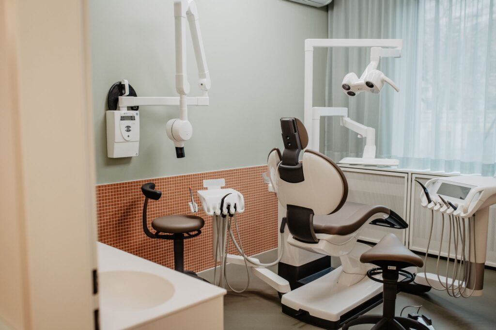

Moderne Zahnmedizin mit persönlicher Betreuung. In unserer Gemeinschaftspraxis in Unterhaching verbinden wir Fachkompetenz mit einfühlsamer Behandlung.
Veneers, Bleaching und vollkeramische Restaurationen für ein strahlendes Lächeln.
Schonende Wurzelkanalbehandlungen mit modernsten Methoden für den Zahnerhalt.
Hochwertige Zahnimplantate als dauerhafte und ästhetische Lösung für fehlende Zähne.
Umfassende Zahnfleischbehandlungen für ein gesundes Fundament Ihrer Zähne.
Professionelle Zahnreinigung und Individualprophylaxe für Kinder und Erwachsene.
Einfühlsame und altersgerechte Behandlung für unsere kleinsten Patienten.
Innovative Kariesfrühbehandlung ganz ohne Bohren — schonend und effektiv.
Chirurgische Eingriffe und Zahnersatz mit höchster Präzision und Sorgfalt.
Kiefergelenksbehandlung und Funktionstherapie bei Beschwerden im Kausystem.
Recall-System für Ihre nächste Kontrolluntersuchung — wir erinnern Sie rechtzeitig.
Kieferorthopädie, Mund-Kiefer-Gesichts-Chirurgie, Logopädie und Physiotherapie/Osteopathie.

Seit vielen Jahren versorgen wir unsere Patientinnen und Patienten in Unterhaching und Umgebung mit kompetenter zahnmedizinischer Betreuung.
Besonderes Augenmerk legen wir auf eine individuelle Beratung und Therapie sowie eine einfühlsame und schmerzfreie Behandlung. Unser professionelles und freundliches Team ist stets mit viel Geduld für Sie da.
Jeder Patient ist einzigartig. Wir erstellen Behandlungspläne, die genau auf Ihre Bedürfnisse zugeschnitten sind.
Mit modernen Methoden und einfühlsamer Betreuung sorgen wir dafür, dass Sie sich bei uns wohlfühlen.
Durch unser gut organisiertes Bestellsystem halten wir Ihre Wartezeit so gering wie möglich.
„Tolle Praxis, tolles Team, toller Arzt. War hier kürzlich für eine Kontrolle + Zahnreinigung und das macht ja normalerweise nicht unbedingt Spaß, aber ich habe mich sehr wohlgefühlt. Kompetent und schnell, nichts ‚aufgeschwatzt' und alle extrem freundlich."
Google Bewertung
„Beste Zahnarztpraxis in der ich jemals war. Dr. Wallbach ist sehr freundlich, kompetent und strahlt eine Ruhe aus, so dass man sich bestens aufgehoben fühlt und keinerlei Angst verspürt. Man wird gut beraten, das gesamte Team ist immer nett und gut gelaunt."
Google Bewertung
„Super Zahnarztpraxis — uneingeschränkt empfehlbar! Die Ärzte nehmen sich Zeit, erklären ausführlich und verständlich. Das Schwesternteam ist sehr freundlich und man fühlt sich extrem wohl. Extra Lob an Schwester Kati für die exzellente Zahnreinigung."
Google Bewertung
Grünauer Allee 49
82008 Unterhaching
Außerhalb der Sprechzeiten:
089 / 72 33 093
notdienst-zahn.de